recetas prácticas para aprovechar tu air fryer todos los días sin caer en la rutina
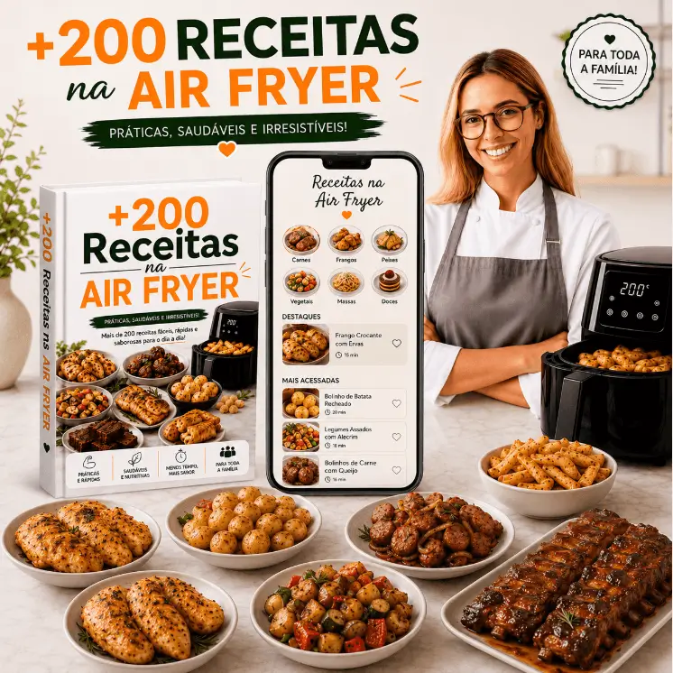
Recetas dulces y saladas para variar tu menú todos los días sin ensuciar tu air fryer
De US$ 57,90 por solo
US$ 6
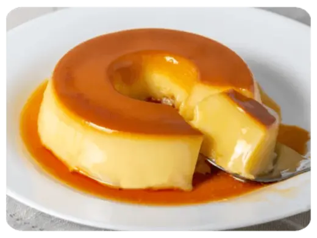
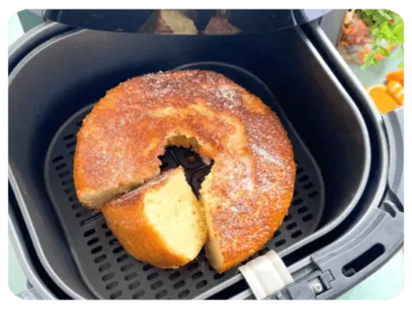
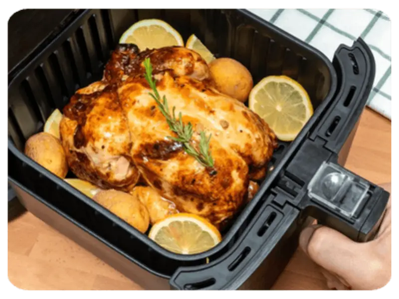
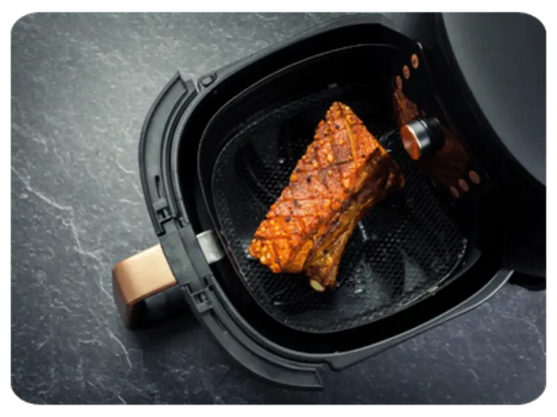
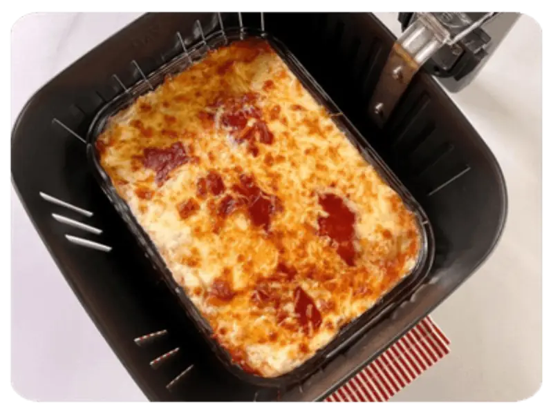
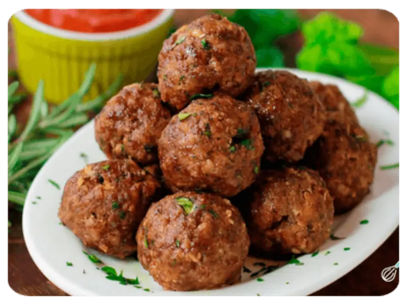
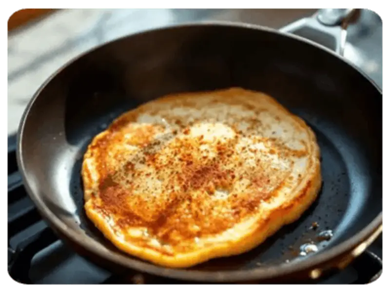
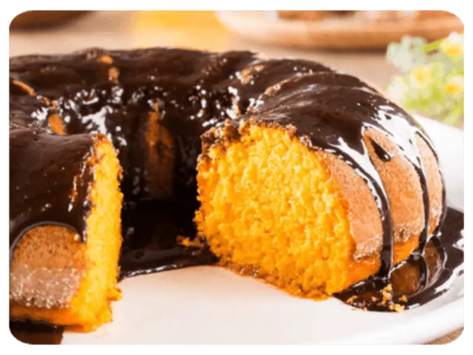
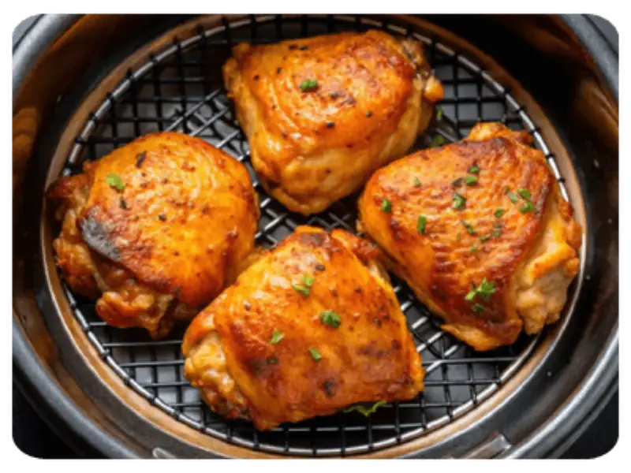
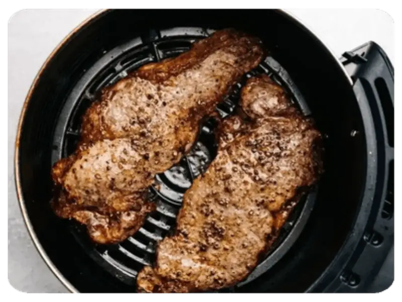
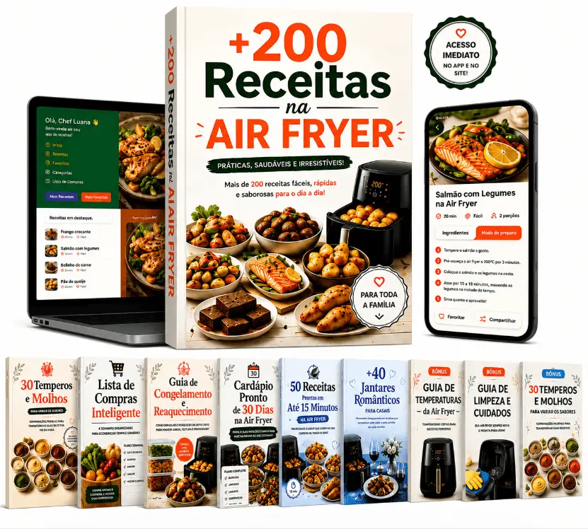
Divididas en categorías completas:
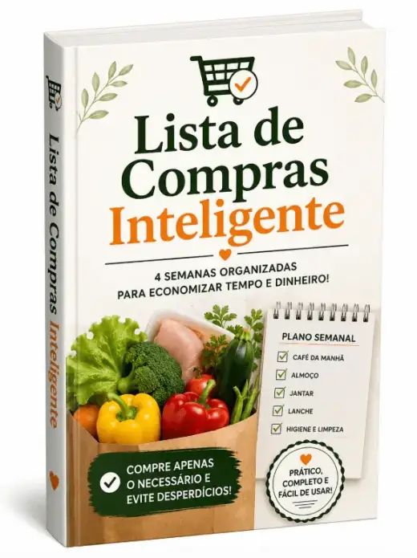
BONO 14 semanas organizadas para ahorrar tiempo y dinero en el supermercado.
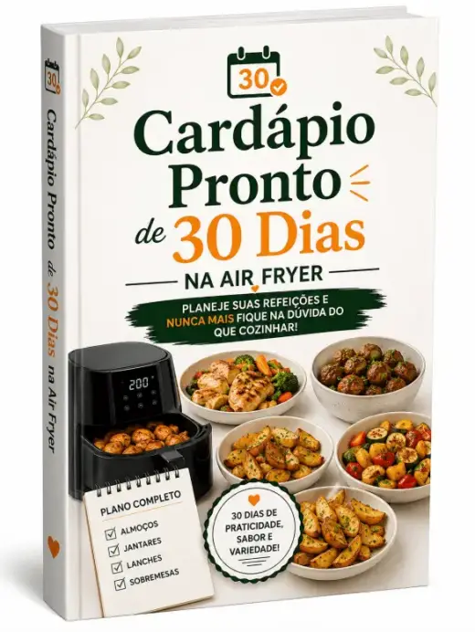
BONO 2Plan completo con almuerzos, cenas, meriendas y postres para nunca más quedarte con la duda.
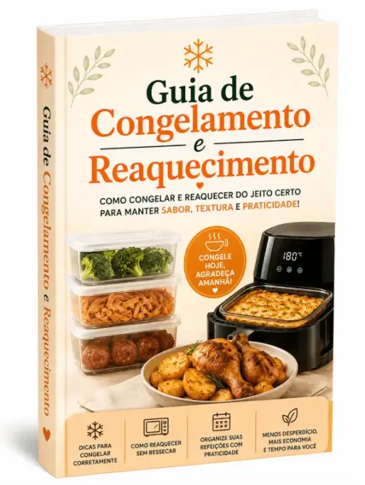
BONO 3Cómo congelar y recalentar manteniendo sabor, textura y practicidad.
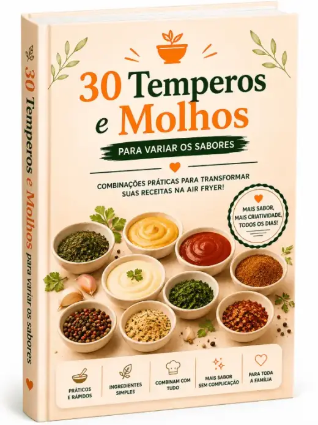
BONO 4Combinaciones prácticas para transformar tus recetas en la air fryer.
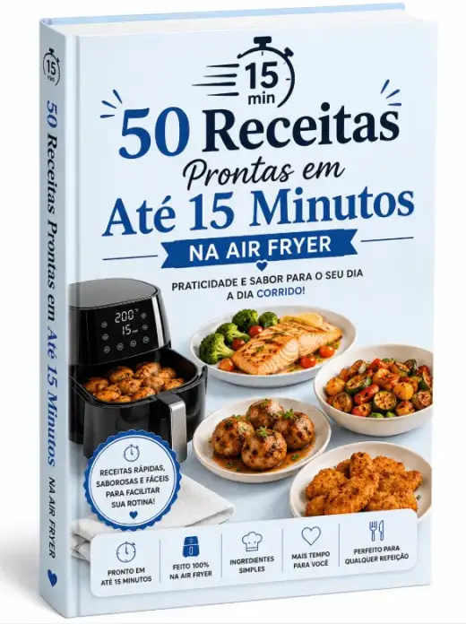
BONO 5Recetas rápidas, sabrosas y fáciles para facilitar tu rutina agitada.
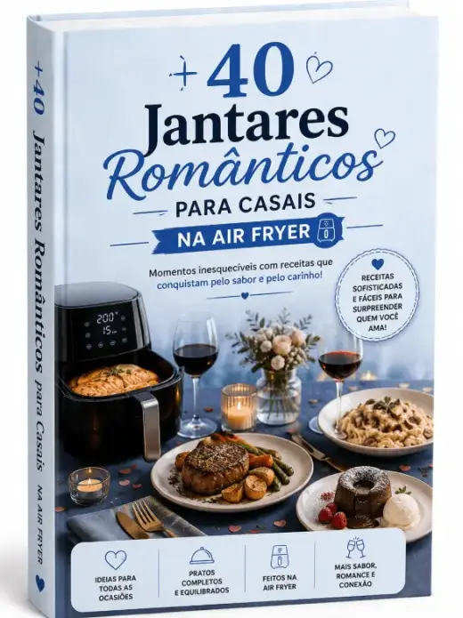
BONO 6Recetas sofisticadas y fáciles para sorprender a quien amas.
Oferta especial por tiempo limitado · Acceso inmediato
¡Bonos Exclusivos!
¡Acceso INMEDIATO por WHATSAPP!
Recibes el contenido al instante en tu celular
Mira lo que dicen quienes ya compraron.
Usaba la air fryer solo para papas fritas. Después de conseguir el libro, descubrí que se puede hacer pastel, pan de queso y hasta lasaña. ¡Se volvió mi electrodoméstico favorito!
Lo compré por las recetas rápidas y ya hice pollo crujiente, papas rústicas y brownie en la air fryer. Todo queda perfecto y casi no se ensucia nada.
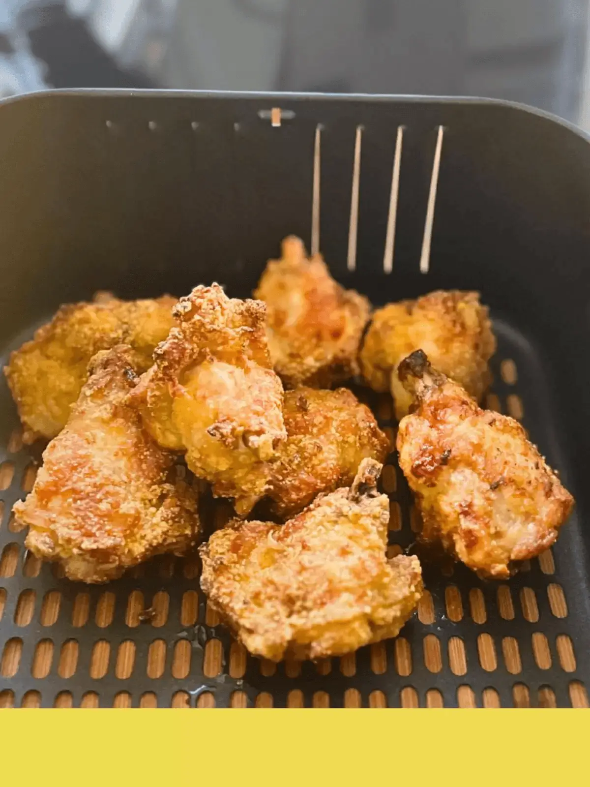
Mi air fryer estaba guardada desde hacía meses. Ahora la uso todos los días. Las recetas de desayuno y merienda salvaron mi rutina agitada.
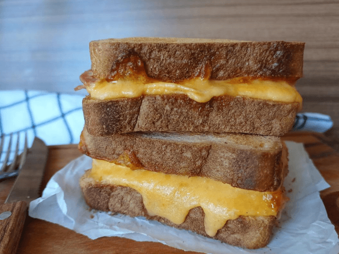
A mi hija le encantan las recetas dulces en la air fryer. Hacemos galletas, muffins y hasta pan de miel juntas. Queda delicioso y el aroma en la cocina es increíble.
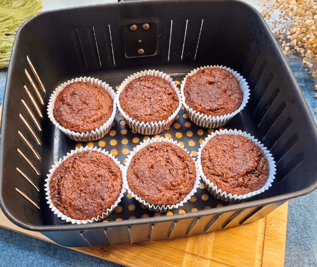
Las recetas están bien explicadas y no piden ingredientes difíciles. Hice las croquetas de yuca en la air fryer y son un éxito en cada reunión familiar.
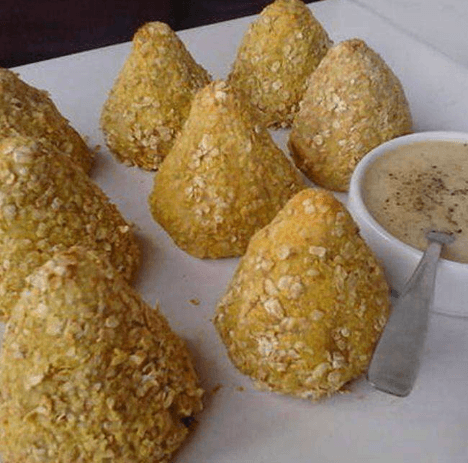
Me parece increíble que se pueda hacer prácticamente todo en la air fryer. Pollo, pescado, carne, dulces, bocadillos... Nunca más me quedo con la duda de qué hacer para la cena.
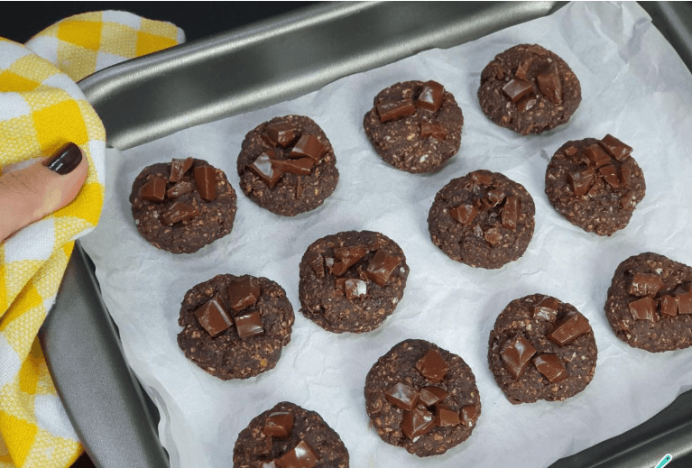
Prueba las recetas durante 15 días. Si no quedas 100% satisfecho(a), te devolvemos todo tu dinero, sin preguntas.
Acceso liberado al instante, a tu manera ✨
Accede donde estés
Pantalla grande para cocinar
Tu cuaderno de recetas
Liberado en segundos
Sí. Las recetas fueron pensadas especialmente para la air fryer, manteniendo sabor, textura crujiente y apariencia irresistible, sin necesitar mucho aceite. La idea es comer mejor aprovechando al máximo tu equipo.
Sí. Las recetas fueron desarrolladas para funcionar en cualquier modelo de air fryer, sin importar la marca o capacidad. Solo ajusta el tiempo y la temperatura cuando sea necesario.
No. La mayoría de las recetas usa ingredientes accesibles y fáciles de encontrar en cualquier supermercado. El objetivo es facilitarte la vida, no complicarla.
Sí. Son recetas dulces y saladas pensadas para agradar a adultos y niños, con opciones para desayuno, almuerzo, cena, meriendas y postres.
Sí. El material fue hecho para el día a día, con paso a paso directo, ingredientes organizados y preparaciones fáciles de seguir en tu air fryer.
No. Incluso quien tiene poca práctica puede seguir las recetas, porque el contenido es simple, didáctico y pensado para principiantes en la air fryer.
No. Se seleccionaron recetas prácticas que ayudan a mantener tu air fryer limpia, evitando preparaciones que salpican o se pegan demasiado en la canasta.
Después de la compra, recibes el acceso inmediatamente en tu e-mail. Puedes abrirlo en el celular, la computadora, la tablet o imprimirlo si prefieres.
Tienes 15 días de garantía incondicional. Si no quedas satisfecho(a), solo solicita el reembolso dentro del plazo y se te devolverá tu dinero.
El acceso es de por vida. Compras una sola vez y puedes consultar las recetas cuando quieras.